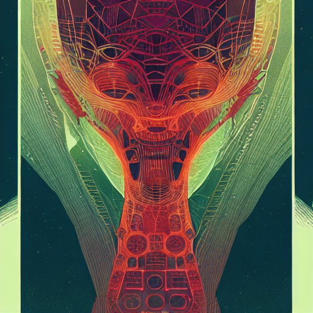
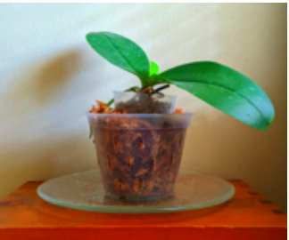

Site Map
| Date | Title | Reading Time | |
|---|---|---|---|
| Jan 4, 2021 | BATTLEBOTS 2021 | 9 min | |

|
Apr 4, 2021 | Resin Dice | 12 min |

|
Jul 28, 2022 | What is Quarto? | 1 min |
|  | Aug 3, 2022 | AI generated art | 2 min |
| Aug 4, 2022 | Observable JS for snappy datascience | 1 min | |
|  | Sep 19, 2022 | Chatbot | 4 min |

|
May 6, 2023 | Ford Maverick Soft Topper installation | 1 min |
| Aug 6, 2023 | Vortico rockets | 1 min | |

|
Oct 5, 2023 | Ford Maverick Truck Cubby Holder | 2 min |
| May 1, 2024 | Hey Google - make me coffee! | 2 min | |
|
|
Blog posts, projects, and random musings | 1 min | |
|
|
Blog posts and random musings | 1 min | |

|
About | 1 min |

No matching items
Refer to: https://quarto.org/docs/websites/website-listings.html